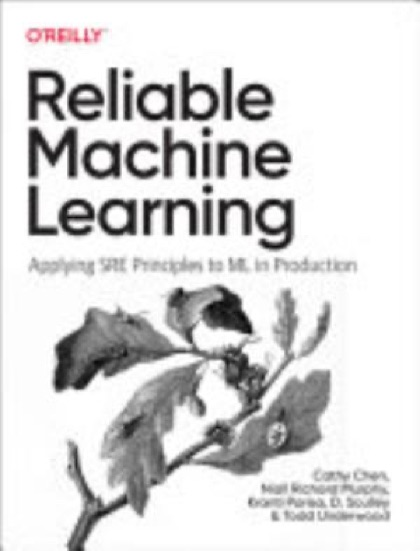

Writing / Book review
Reliable Machine Learning: What Happens When SREs Run Your Models
Written by Google-veteran SREs and ML practitioners, this book applies Site Reliability Engineering to ML. SLOs, incident response, and organizational design for models in production.

- Book
- Reliable Machine Learning: Applying SRE Principles to ML in Production
- Author
- Cathy Chen, Niall Richard Murphy, Kranti Parisa, D. Sculley, Todd Underwood
- Publisher
- O'Reilly Media, 2022
- ISBN
- 9781098106225
- My rating
- ★★★★½ 4.5/5
VerdictThe book that treats ML as an operational discipline. Essential for anyone on call for a model, and for leaders deciding how ML teams should be organized.
Most ML books end at deployment. This one starts there. Written by a team that includes Site Reliability Engineering veterans and D. Sculley of "Hidden Technical Debt" fame, Reliable Machine Learning asks: what does it mean to run a model reliably, at 3 a.m., when it breaks?
The core reframing
That third row is the book's thesis. A model can degrade with zero code changes, because the world drifts. Reliability practices have to watch data and outcomes, not just servers.
The ML lifecycle, through an SRE lens
Ideas worth stealing
SLOs for models
Incident response for ML
The book's incident case studies are the highlight. They show how ML outages differ: slower to detect, harder to attribute, and frequently caused upstream in data.
Organizational design
Unusually, the book covers how to organize teams around ML: who owns the data, the model, and the on-call rotation, and how to avoid the "throw it over the wall" handoff between data scientists and operations.
Limitations
- Pre-LLM, so foundation-model operations, such as prompt versioning and judge drift, are not covered directly, though the principles transfer cleanly.
- Dense in places, and written for practitioners with some production experience.
How it shaped my practice
The canary-and-rollback discipline in How to Ship a Model Safely comes straight from the SRE mindset this book teaches.
Verdict
4.5 stars. If you carry a pager for a model, or manage people who do, read this book.

Shivam Negi is an AI engineer and Principal Data Scientist who works on evaluating voice agents, small language models, and applied ML. More about me